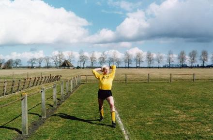

1.
The Netherlands
オランダの写真家・ハンス・ファン・デル・メールは、1998年『Hollandse Velden (“Dutch Fields”)』 2001年『KEEPERS』2002年『The Other Final (filmed by KesselsKramer)』2006年『European Fields』とサッカーを主題にしながらも、サッカーの商業的な側面から距離を取ったユニークなアプローチで写真集を制作してきた。
↪ Photographer, The Netherlands
↪ hansvandermeer.nl
2.

by Hans van der Meer
The Netherlands
1998年にオランダ語で2004年に英語版が発売されたハンス・ファン・デル・メールのサッカーを扱った最初の写真集。オランダの新聞『Volkskrant』のジャーナリストからアマチュアサッカーについての記事に載せる写真を依頼されたことがきっかけで撮影を始める。1988年にオランダ・ハーグにある『Spaarnestad Photo』で昔のサッカーを撮影した写真アーカイブの中にあった、スタジアムのスタンドから撮影された1枚の写真からアイデアを得て制作された。
↪ 1998, De Verbeelding
↪ hansvandermeer.nl/dutchfields
3.

The Netherlands
オランダ・ハーグにある古い写真の記録保存館。ハンス・ファン・デル・メールの一連のサッカーにまつわる作品は、ここにある昔のサッカーの写真からアイデアを得て制作された。
↪ Den Haag, The Netherlands
↪ spaarnestadphoto.nl
4.

by Jan Mulder
The Netherlands
1988年にオランダで出版された1911年-1955年までのサッカーオランダ代表の白黒写真を収めた写真集。後に1998年『Hollandse Velden』2001年『KEEPERS』にもテキストを寄せている、元アヤックスの選手で、現コラムニスト・サッカー解説者のヤン・モルダーが序文を、写真のセレクトをハンス・ファン・デル・メールが行っている。写真は全て『Spaarnestad Photo』の写真アーカイブからセレクトされている。
↪ 1988, Focus
↪ catawiki.nl
5.

by Hans van der Meer
The Netherlands
2001年オランダの出版社『Verbeelding』から出版された、ゴールキーパーがひとり佇んでいる姿がひたすら写っているユニークな写真集。前作『Hollandse Velden』からのスピンオフとして制作され、主にオランダとベルギーのゴールキーパーの写真で構成されている。
↪ 2001, De Verbeelding
↪ hansvandermeer.nl/keepers
6.

by KesselsKramer
The Netherlands
2002年オランダの広告代理店『KesselsKramer』と日本のプロダクション『ROBOT』によって製作された蘭・日合作の映画。2002年6月30日横浜で行われたワールドカップ決勝戦と同じ日にブータンとモントセラトの間で行われた「もう一つの決勝戦」と題したFIFAランク最下位決定戦のドキュメンタリー。スチールカメラマンとしてハンス・ファン・デル・メールも参加している。
↪ 2002, KesselsKramer
↪ KK : The Other Final
7.
by Hans van der Meer
The Netherlands
2002年のドキュメンタリー映画『The Other Final』の写真集。写真は映画にスチールカメラマンとして参加したハンス・ファン・デル・メールによる撮影。ブータンとモンセラットという全く違う文化を持つ2つの国の人々の間のサッカーを通した交流が収められている。
↪ 2002, KesselsKramer Publishing
↪ KK : THE OTHER FINAL BOOK
8.

The Netherlands
17歳までプロサッカー選手を目指していたというオランダ人映像作家ヨハン・クレイマー。1996年エリック・ケッセルズと『KesselsKramer』を設立。2006年にパートナーシップを解消後は映像作家として様々な映像作品を制作しているが、サッカーをモチーフにした映像が多い。『The Other Final』の監督でもある。本名は "Jan" だが少年時代にヨハン・ニースケンスの大ファンでそれ以来呼び名を"Johan"に変えたほどのサッカーファンでもある。
↪ Film Director
↪ johankramer.com
9.
by Johan Kramer
The Netherlands
おじさんからもらったゴールキーパーの写真（マンチェスター・ユナイテッドFCのGK最多出場記録、最多得点記録を持つアレックス・ステップニー）をきっかけにゴールキーパーになることを夢みるようになった少年ケンくんの小さな物語。
↪ 2011, 328 Stories
↪ Vimeo : Ken van der Sar
10.
FCバルセロナファンの主人公・ヨハンは毎日、FCバルセロナのスタジアム、カンプ・ノウの周りを愛車 CITROEN 2CV で50周する事を日課にしている。只々チームの勝利を願い回り続ける主人公の姿は、プロ野球ヤクルトの全試合分の名場面を描き、チームと共にペナントレースを戦うという野球美術家のながさわたかひろの活動とも通じるものがある。
↪ 2009, PUPKIN
↪ PUPKIN : Johan Primero
11.

by Johan Kramer
Germany
2006年ドイツワールドカップに合わせてMTV Germanyが企画したショートムービーシリーズ『Das ist So Togo ("This is So Togo")』。ドイツの工業都市 Brückhausen に住むドイツ人のトニー君はドイツワールドカップに参加している国の中でももっとも謎の多い国のひとつ西アフリカ・トーゴの大ファン。ドイツの地方工業都市とトーゴというどちらも等しく未知な場所同士がサッカーを介して繋がっている面白さを見せてくれる。
↪ 2006, MTV : Das Ist So Togo
↪ Vimeo : Toni Togo - Intro
12.

by Johan Kramer
The Netherlands
2006年にFCバルセロナの協力を得て制作されたバルセロナを舞台にしたショートフィルム。１２歳のヴィクター君はFCバルセロナ（特にヘンリク・ラーション選手）の大ファンでいつかカンプ・ノウでプレーしてゴールすることを夢見ている。普通の少年と何ら変わらない夢を抱いたヴィクター君が他の友達と違うのは視力がわずか0.08しかないという事。。
↪ 2006, Christel Palace
↪ FILMFESTIVAL.NL : 0.08
13.

東ベルリンにあるアマチュアサッカーチーム Mühlenbeck SVとBirkenwerderの試合で実際に起きた出来事を元にした作品。2004年5月1日、週末のリーグ戦にホームチームのMühlenbeck SVは６名しか選手が来なかった（７名以上でないと試合は出来ない）ため試合の中止を申し出る。しかし、リーグ規約により100ユーロの支払いを命じられてしまった彼らは、相手チームも合意の上で審判に6-0で負けたという嘘の試合レポートを書くように持ちかける。。タイトルの『ミューレンベックの奇蹟』は1954年のワールドカップでドイツ代表が無敗を誇ったハンガリー代表を破って優勝した試合『ベルンの奇蹟』から皮肉を込めてつけられている。
↪ 2006, Christel Palace
↪ FILMFESTIVAL.NL : Das Wunder von Mühlenbeck
14.

by Hans van der Meer
The Netherlands
ドイツのサッカー雑誌『11 FREUNDE』での連載をまとめ、2006年にロンドンにある出版社『SteidlMACK』から５ヶ国語版で出版された。“As far away as possible from the Champions League”(『チャンピオンズリーグからできる限り遠く離れて』)という写真家の言葉のとおり、ヨーロッパ中の下部リーグのみを毎週末追いかけ続け、脚立に乗って少し高いところから撮影された写真は、選手も応援に来た人も（犬も）同等に風景の一部に溶け込み、100年前も同じ光景が同じ場所で繰り広げられていたであろうこのスポーツの美しい原風景を見せてくれている。長らく絶版となっていたがワールドカップイヤーの2014年にドイツの出版社『Steidl』から8年ぶりに再版される。
↪ 2006, SteidlMACK
↪ hansvandermeer.nl/europeanfields
15.

Germany
2000年にフリーペーパーとしてベルリンの小さなアパートでスタートしたドイツ唯一のサッカー専門誌。かつてブンデスリーガに所属していたビーレフェルトのファンである記者とカメラマンが自費出版で発行していたが、2005年に全国紙になってからは部数を伸ばし続け、現在では「ドイツで手に入る最高のファンマガジン」と評されるほどになった。アマチュアサッカーからチャンピオンズリーグ、先週末のリーグ結果から1940年代の試合についての詳細なレポート、カンプ・ノウからアフリカのスタジアムへとページをめくるたびに普通のサッカー誌とはひと味違ったトピックを毎号絶妙なバランスで散りばめていて、コアなサッカーファンから、普段はサッカーを見ないような人までも思わず手に取らせるような魅力に満ちたサッカー誌。
↪ 2000, Berlin
↪ www.11freunde.de
16.
Germany
2009年からスタートした11FREUNDEマガジンの『Spezial』シリーズ。1950年代、60年代、70年代、80年代、90年代、00年代と各年代ごとに1冊ずつ2011年までに6冊制作された。2012年からは『ファン』『イングランド』『反逆者』『ポップ』『ルール地方のライバル』と毎号1テーマを掘り下げる形で不定期に出版されている。
↪ 2009, Berlin
↪ www.11freunde.de
17.
1962年生まれのイギリス人写真家ジュリアン・ジャーメインの1994年発行の写真集。イングランドのイプスウィッチ生まれで自身も地元のプロサッカーチーム、イプスウィッチ・タウンでプレーすることを夢見ていた少年時代のスクラップブックをそのまま本にしたような素晴らしい写真集。
↪ 1994, Booth-Clibborn Editions
↪ in soccer wonderland
18.
ブラジルのストリートチルドレンの支援を目的とした『No Olho da Rua』プロジェクトの一環としてブラジル人アーティスト Patricia Azevedo、グラフィックデザイナーMurilo Godoyと共に制作された。ブラジルのスラム「Favela do Cascalho」に住む子供たちにカメラを持たせ撮影したスナップショットを中心に、新聞の切り抜き、はがき、ペインティング、などが散りばめられている。子供たちの目を通して見えてくるコミュニティの日常とコミュニティの中の人々のサッカーとのささやかながら美しいつながりを垣間見ることができる。
↪ 1998, Basalt Publishers
↪ No Mundo Maravilhoso do Futebol
19.

ロンドン発の新世代フットボール・マガジン。2009年の Issue 0『The Green』をえて2010年に『The Green Soccer Journal』としてロンドンのデザイン事務所「Junior Junior」で一緒に働いていたサッカー好きの Adam Towel とJames Roper の2人によって創刊された。ファッション誌にモデルとして登場するサッカー選手、建築の雑誌で特集されるサッカースタジアム、カルチャーマガジンでのファンのポートレイトなど、これまで常に外からアプローチされる側だったサッカーを捉え直し、初めてサッカーの側から、ファッション、建築、写真、カルチャー、ライフスタイルなどにアプローチして構成された誌面は新鮮でこれまでのどのフットボール・マガジンとも違う魅力にあふれている。
↪ 2009, Junior Juniro Media Limited
↪ The Green Soccer Journal
20.

UK
ロンドンのFUEL Publishingより2006年に発行された450冊のマッチデープログラムを収録した作品集。試合当日のスタジアムで配られるその日の試合のプレビューや選手のインタビューなどが掲載されたマッチデープログラム。2000年代に入りデジタル化が進み印刷物として配布されることも珍しくなってしまった、マッチデープログラムの黄金期ともいえる1945年からプレミアリーグ開幕の1992年までに発行された450冊が紹介されている。音楽ライターのBob Stanleyによって編集され、序文はイングランドのスポーツライターの中でも特別な存在のBrian Glanvilleが寄せている。
↪ 2006, Fuel Publishing
↪ FUEL : Match Day
21.

UK
2011年にリバプールに住むPaul GleesonとDan Byrneによってスタートしたフリーペーパー。2012年までに Issue 4 まで発行されている。毎号独自の視点で選ばれたサッカーにまつわる様々なトピックを扱い、B5サイズで少数ページ、と見た目はファンジンながら雑誌さながらの充実した誌面が印象的な新世代ファンジン。
↪ 2011, SPIEL Publishing
↪ spielmagazine.com
22.

2011年にファジン『SPIEL』をスタートさせたリバプール出身のPaul GleesonとDan Byrneが2012年から始めた次なるプロジェクトは、毎週末イングランド各地のスタジアムで無料配布されているマッチデープログラム。デジタル化が進み試合前のチーム情報もオンラインでチェックすることが当たり前になり、以前ほど盛んに配られることの無くなったマッチデープログラムに注目し、今までのマッチデープログラムにはない斬新なアプローチとデザインで2012/13シーズンの終わりに Issue 1から Issue 5 までが発行されると瞬く間にスタジアムに訪れたサポーター達の間で話題となった。2013/14シーズンも発行を続け2014年3月現在 Issue 9 まで発行されている。
↪ 2012, SPIEL Publishing
↪ www.fieldmatchday.com
23.
2004年にドイツの出版社 Steidl から出版されたドイツ人写真家 Juergen Tellerの写真集。2002年の日韓ワールドカップ決勝戦、ドイツ対ブラジル戦をテレビの前で観戦している自分自身をビデオカメラで撮影し、映像から顔の表情のみを切り出した白黒の画像が淡々と続いていく。ドイツ・エアランゲン出身で少年時代はプロサッカー選手を目指していたという写真家は今だに自身もプレーを続けるほどの大のサッカーファンとしても知られている。『Match Day』を出版したロンドンのFUELがブックデザインを担当している。
↪ 2004, Steidl
↪ Steidl : Nackig auf dem Fußballplatz
24.
UK
2013年に創刊されたロンドン発のサッカーカルチャー誌。BBCやEurosportなどでスポーツジャーナリストとして活動していた Michael De Silva が編集長を務め、2013年12月に発売された創刊号『The England Issue』ではスポルティング・リスボンに所属するU21・イングランド代表 Eric Dier, アーセナルの Kieran Gibbs, エバートンレディース・女子イングランド代表の Toni Dugganのインタビュー、Non league と呼ばれるイングランドの下部リーグに所属する Hendon FC の特集、スパーズファンのポートレイト、チャンピオンズリーグの試合レポートなど幅広いトピックを扱う。誌名の『RABONA』は 1948年のアルゼンチンリーグの試合で Ricardo Infante 選手が初めてやったとされる軸足の裏からもう片方の足をクロスさせてボールを蹴る動作に由来している。
↪ 2013, RABONA
↪ www.rabonamag.com
25.
Spain
2011年に創刊されたバルセロナ発のサッカーカルチャー誌。2011年に36年間続いたスペインのサッカー週刊誌『ドン・バロン』が休刊し、それに変わるようにして若い世代の編集者や記者が中心になり、新たなサッカー誌の創刊が相次いだスペインのサッカー誌。 その中でもPANENKAは『読むフットボール』という編集方針を掲げ、週末の試合結果やスター選手などは一切扱わず、サッカーを取り巻く政治や歴史、社会状況などを掘り下げることで、現在のサッカーのあり方を考えなおすような誌面になっている。誌名の『Panenka』は元チェコスロバキア代表MFアントニーン・パネンカの有名なPK (ふわっと浮かすように蹴るやり方)から由来。
↪ 2011, Panenka
↪ www.panenka.org
26.
Spain
2012年に創刊されたマドリッド発のサッカーカルチャー誌。2007年から2012年まで発行されていたスペインの新聞『Público』の記者たちが集まり創刊した。スペインのサッカー情報源といえばもっぱらキオスクで手に入れるスポーツ紙（マドリッドの2紙 AS・Marca、バルセロナの2紙 El Mundo Deportivo・Sport）が一般的で、『ドン・バロン』を唯一の例外として、これまでサッカー雑誌が注目を集める事はなかったスペインで創刊号が1万部発行と高い注目を集めた。
↪ 2012, SGEL
↪ revistalibero.com
27.

France
2002年に2冊の創刊準備号を経て、2003年に創刊したフランスのサッカーカルチャー誌。2000年、同じ大学に通っていた3人（現編集長のFranck Annese, Guillaume Bonamy, Sylvain Hervé ）で作った会社『SO PRESS』 から出版。2012年時点で毎号10万部以上が売れるフランスを代表するサッカー誌となっている。イギリスの『When Saturday Comes』を起源として2000年以降に新世代の編集者達によって出版された、ドイツの『11FREUNDE』スウェーデンの『Offside』オーストリアの『Ballesterer』と並んでこれまでのサッカー誌になかった新しいアプローチで幅広い世代のサッカーファン（ファンでない人達も）からの支持を得た。編集方針として『3つのH : humor（ユーモア）, human(人間的), history（歴史）』を掲げている。
↪ 2002, SO PRESS
↪ www.sofoot.com
28.

1986年に創刊されたイギリスのサッカー評論誌。それまでのサッカー誌のあり方に疑問を感じていたジャーナリストの Mike Tischer とロンドンのレコードショップ『Our Price Records』で働いていた Andy Lyons の2人が、ロンドンの図書館のコピー機で創刊号となる100部を印刷してホチキスで留めたものを、音楽同人誌『Snipe』2号の付録として無料で配ったのが始まり。創刊号をガーディアン紙でサッカーの記事を書いていた編集者 Phil Shaw に送り彼が新聞に記事を書いたことで徐々に一般に知られるようになり、2年後の1988年には全国で売られる月刊誌となった。1990年からは広告が掲載されるようになり、著名なライターやジャーナリストも寄稿するようになったが、今でも2人で記事を書き編集し、ホチキス留で薄い紙、ファンからの手紙や寄稿文を掲載するなど発刊当時のDIYスピリットは失われていない。
↪ 1986, When Saturday Comes
↪ www.wsc.co.uk
29.

Sweden
2000年に創刊されたスウェーデン最大のサッカーカルチャー誌。スウェーデンで新聞記者をしていた Mattias Göransson と Tobias Regnell の2人が創刊し現在は年6回発行、その他にも定期的にサッカーにまつわる刊行物を発行している。創刊前の1999年を振り返り『サッカーファンもいなければ、サッカーの記事が新聞に載ることもないし、専門のレポーターもいなかった。』というほどサッカーに関心の無かったスウェーデンでスウェーデン語で雑誌をスタートさせ、現在ではスウェーデン語で読むことのできる国民的サッカー誌となっている。
↪ 2000, Offside Press
↪ www.offside.org
30.
Austria
2000年に創刊されたオーストリアの唯一のサッカーカルチャー誌。2000年に Reinhard Krennhuberを中心に、Klaus Federmair, Robert Hummer, Florin Mittermayr が集まりイギリスの『When Saturday Comes』をモデルに創刊号を制作した。年10回発行で発行部数は2万部を超え、オーストリアのみならずヨーロッパ中のサッカーファンからも毎号注目されている。2013年発行の ISSUE#86 以降、誌面の大幅なリニューアルが行われ、ウィーン出身で自身もサッカーの大ファンだというグラフィックデザインチーム LWZ が誌面デザインを担当している。
↪ 2000, Ballesterer fm
↪ www.ballesterer.at
31.

UK
2011年創刊のイギリス・サンダーランド発の・サッカー批評誌。年4回発行の季刊誌でデジタル版とプリント版を購入時に選べるようになっている。また、価格もプリント版は6ポンド以上であれば購入者が自由に決定して支払う“Pay What You Like”システムをとっている。発行人の Jonathan Wilson は Guardian, Independent, Sport Illustrated,World Soccer, Four Four Two などでコラムを書いているジャーナリスト。特徴は世界中から選ばれた名立たるライターやジャーナリスト、コラムニストによる読み物。誌面の殆どがテキストで構成され、サッカーにまつわる短編小説を集めたような『読む』サッカー誌となっている。誌名はサンダーランドで1893年に Sidney Duncan によって出版され、わずか12号で終ってしまった新聞の名前に由来している。2014年3月時点で Issue 12 まで発行されている。
↪ 2011, Blizzard
↪ www.theblizzard.co.uk
32.

US
2012年創刊のアメリカのサッカー雑誌。アメリカの様々な雑誌で編集者として働いていた、Mark KirbyとGeorge Quraishi の2人によって創刊された。創刊号はアメリカのクラウド・ファンディングサイト『KICKSTARTER』で制作資金を募り、目標金額を大幅に超え創刊資金獲得に成功した。サッカーにまつわる様々な物語を毎号丁寧に掘り下げて伝えることで、なかなかサッカーの根付かないアメリカにサッカーの面白さを広めるべくスタートした。誌名は2010年南アフリカワールドカップ、アメリカ対イングランドの試合でイングランドのキーパーRobert Green が犯したミスに対して、キーパーコーチ Bob Wilson が言った "a basic schoolboy error, a howler" に由来している。
↪ 2012, Howler
↪ www.howlermagazine.com
33.
Canada
2013年12月に創刊したばかりのカナダのサッカー誌。年2回発行で英語とフランス語の両方で記事が書かれている。編集長を務めるのはニュージーランド出身でクリエイティブディレクター、ライターをしている Kingston Trinder。誌名の『TIFO』はイタリア語で「サポートする」という意味があり、『熱狂的なファンのための教材』という雑誌のコンセプトを表している。Issue 2 が5月に発売予定。
↪ 2013, TIFO
↪ www.tifomag.com
34.

UK
2011年に創刊したロンドン発のタブロイド版サッカー紙。デジタル版とプリント版がありデジタル版はオンラインで見ることができる。ロンドン市内のバーなどではフリーペーパーとしても配布されている。表紙は毎号様々なイラストレーターによって描かれ、タブロイドサイズに描かれた選手や監督のポートレイトが目を引く。2014年3月現在 Issue 8 まで発行されている。誌名は1966年イギリスワールドカップ開催前にロンドンで盗難にあったトロフィーを発見したコリー犬の名前に由来。
↪ 2013, Pickles
↪ www.picklesmagazine.co.uk
35.
Germany
2005年に創刊し2007年の Issue 21 を最後に廃刊したドイツ・ハンブルグ発のサッカーカルチャー誌。ドイツで最も歴史のあるスポーツ誌（サッカー誌ではない）『Kicker』の編集者が中心になり、同じく『Kicker』を出版している『Olympia Verlag』から発行されていたが、発行部数が伸びず同社からの出版を打ち切られる。新たな出版社を探すも見つからず2007年以後はオンラインマガジンとして再スタートしている。RUND ホームページにて発行した全ての Issue がPDF形式で閲覧可能となっている。
↪ 2007, Olympia Verlag
↪ www.rund-magazin.de
36.
Switzerland
2007年に創刊したスイス・ベルン発のサッカーカルチャー誌。年に6回発行、発行部数は1万部とスイス発のサッカー誌では最大規模となっている。サッカーをシンプルにボールゲームと捉えシリアスにならないようしているという誌面は、スポーツ紙にはのることのないスタジアム周辺にある小さな物語を毎号取り上げることで、フィールドとファンの境界を埋めることに成功している。
↪ 2007, Zwölf
↪ www.zwoelf.ch